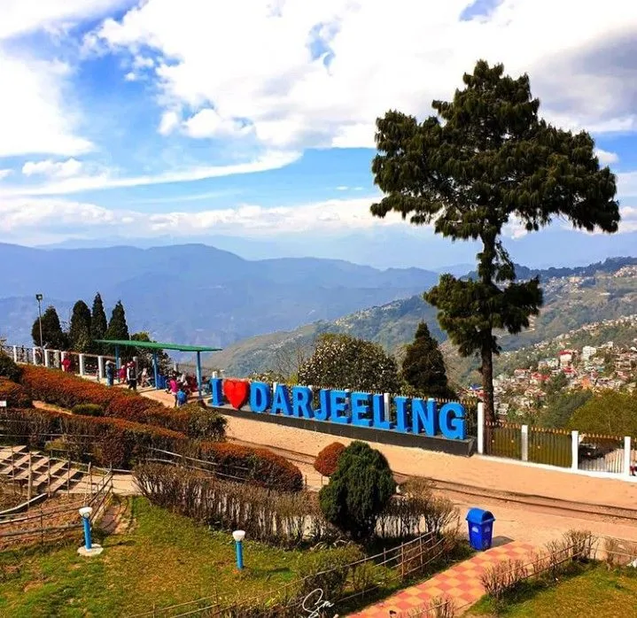
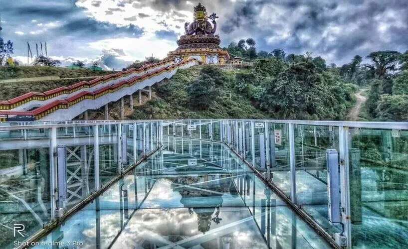
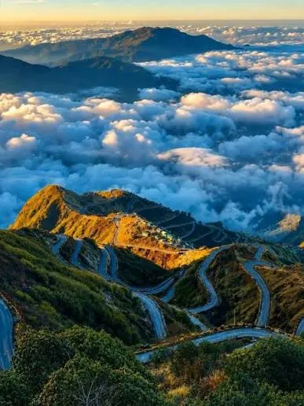
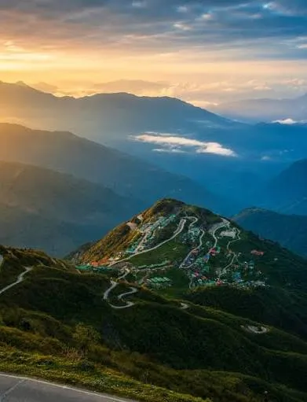

Sikkim & Darjeeling · −10%
DARJEELING 5N-6D(Darjeeling-Pelling-Zuluk)
Darjeeling - Queen of the Himalayas
Overview
Experience the breathtaking beauty of the Eastern Himalayas on this 5 Nights & 6 Days tour covering Darjeeling, Pelling and Zuluk. Begin your journey in the charming hill town of Darjeeling, where you can enjoy the spectacular Tiger Hill sunrise, Ghoom Monastery, Batasia Loop, tea gardens and Mall Road. Continue to Pelling, known for its peaceful monasteries, beautiful valleys and magnificent views of Kanchenjunga, with visits to Pemayangtse Monastery, Rabdentse Ruins, Khecheopalri Lake and Pelling Skywalk. The journey then takes you to Zuluk, a scenic high-altitude village on the historic Silk Route, offering breathtaking mountain roads, winding hairpin bends and panoramic Himalayan views from places such as Thambi View Point, Lungthung and Nathang Valley. This carefully planned tour combines nature, culture, adventure, mountain sightseeing and peaceful hill experiences, making it an ideal getaway for families, couples and nature lovers looking to explore the diverse beauty of Darjeeling and Sikkim.
Journey highlights
- Tiger Hill Sunrise
- Ghoom Monastery
- Batasia Loop
- Tea Garden Visit Mall Road & Chowrasta
- Pemayangtse Monastery
- Rabdentse Ruins Khecheopalri Lake
- Pelling Skywalk
- Kanchenjunga Views Silk Route Drive
- Thambi View Point
- Lungthung Nathang Valley
- Himalayan Sunrise/Sunset Views
Day by day
The itinerary
-
Day 1
NJP/IXB TO DARJEELING DROP
Arrive at NJP Railway Station or Bagdogra Airport (IXB) and meet our representative. Proceed towards Darjeeling through scenic Himalayan roads, enjoying beautiful tea gardens, forests and mountain landscapes. On arrival, check in to the hotel and relax. In the evening, enjoy leisure time at Mall Road and Chowrasta, with opportunities for local shopping and enjoying the mountain atmosphere.
NJP/IXB PickupScenic Himalayan DriveTea Garden ViewsMountain LandscapesMall RoadChowrastaLocal ShoppingEvening Leisure
-
Day 2
DARJEELING FULL TO DAY SIGHTSEEING
Start early with a visit to Tiger Hill to experience the spectacular sunrise over the Himalayas and, subject to weather conditions, views of Kanchenjunga. Return via Ghoom Monastery and Batasia Loop. After breakfast, visit the Darjeeling Tea Garden, Himalayan Mountaineering Institute, Padmaja Naidu Himalayan Zoological Park and Tenzing Rock. Later, enjoy free time around Chowrasta and Mall Road.
Tiger Hill SunriseKanchenjunga ViewsGhoom MonasteryBatasia LoopTea GardenHMIHimalayan Zoological ParkTenzing RockMall Road
-
Day 3
DARJEELING TO PELLING DROP
After breakfast, check out from Darjeeling and proceed towards Pelling. Enjoy a scenic journey through the beautiful Himalayan foothills, forests, valleys and picturesque villages. On arrival in Pelling, check in to the hotel and relax. Spend the evening enjoying the peaceful surroundings and panoramic mountain views.
Darjeeling–Pelling Scenic DriveHimalayan ValleysForest LandscapesVillage ViewsMountain PhotographyKanchenjunga ViewsPelling Leisure
-
Day 4
PELLING FULL TO DAY SIGHTSEEING
After breakfast, explore Pelling's famous attractions. Visit Pemayangtse Monastery, one of Sikkim's important monasteries, followed by the historic Rabdentse Ruins. Continue to the peaceful Khecheopalri Lake, surrounded by lush forests. Visit the Sky Walk and Chenrezig Statue for panoramic Himalayan views, followed by Kanchenjunga Falls. Return to the hotel after sightseeing.
Pemayangtse MonasteryRabdentse RuinsKhecheopalri LakeSky WalkChenrezig StatueKanchenjunga FallsHimalayan ViewsPhotography
-
Day 5
PELLING TO ZULUK DROP
After breakfast, check out and proceed towards Zuluk through the scenic mountain roads of Sikkim. Continue towards the historic Old Silk Route, enjoying spectacular Himalayan landscapes, deep valleys and winding zig-zag roads. On arrival at Zuluk, check in to your hotel/homestay and relax. Enjoy the peaceful mountain surroundings and, if weather permits, beautiful sunset views.
Pelling–Zuluk DriveOld Silk RouteZuluk VillageZig-Zag Mountain RoadsHimalayan ValleysScenic ViewpointsPhotographySunset Views
-
Day 6
ZULUK TO NJP/IXB DEPARTURE
Start your morning with beautiful Himalayan scenery around Zuluk and, subject to weather conditions, enjoy the sunrise over the Eastern Himalayas. After breakfast, begin your return journey towards NJP Railway Station or Bagdogra Airport (IXB). Enjoy the final views of the Silk Route and Himalayan foothills before your onward journey.
Zuluk SunriseHimalayan ViewsSilk Route DriveMountain PhotographyScenic FoothillsNJP Railway Station DropBagdogra Airport Drop
Full inclusions and exclusions for this journey are confirmed personally by your travel expert — ask us.
Gallery
Scenes from the route





Reserve this journey